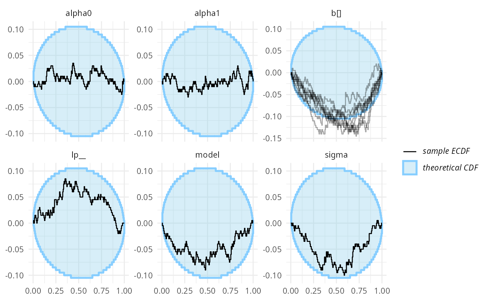
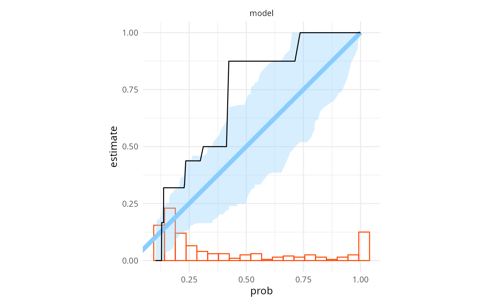
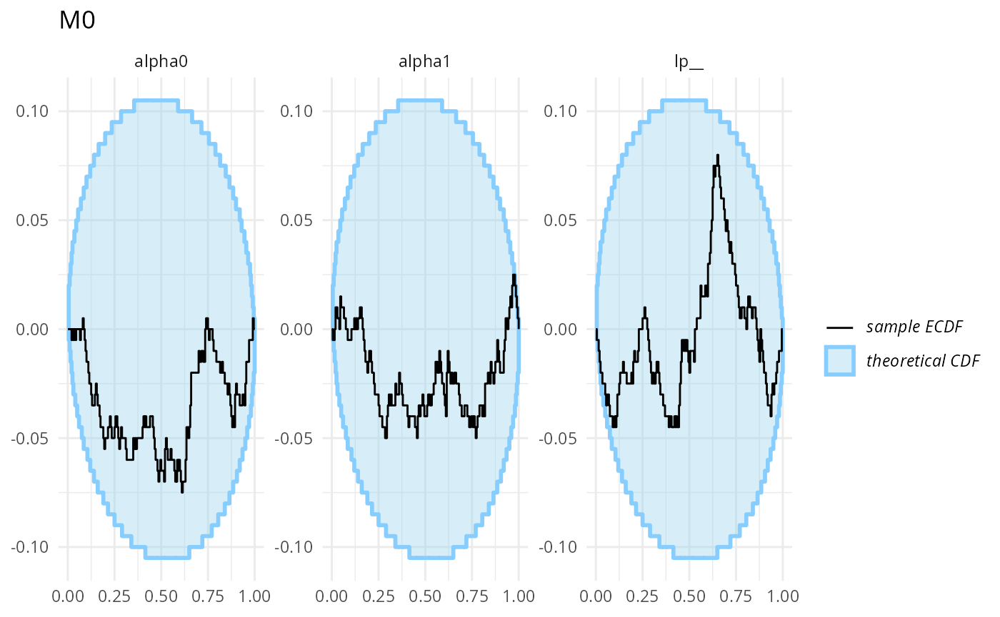
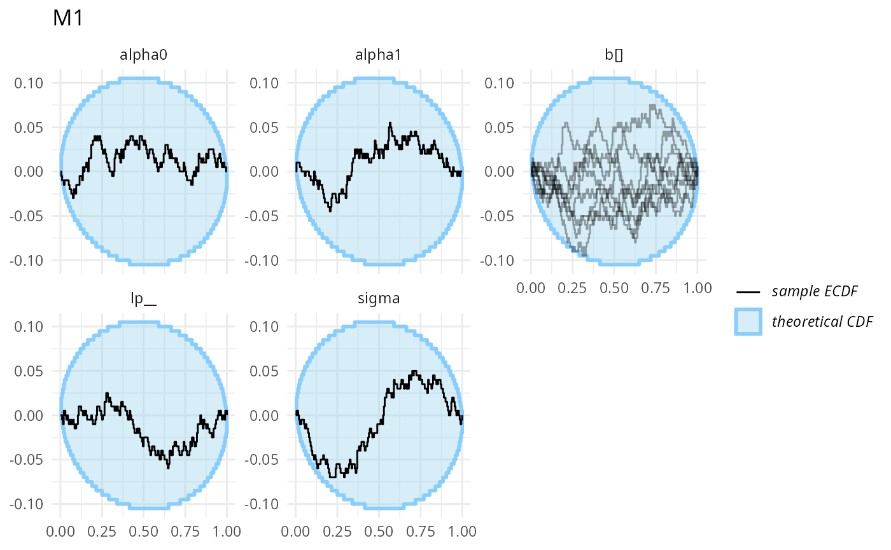
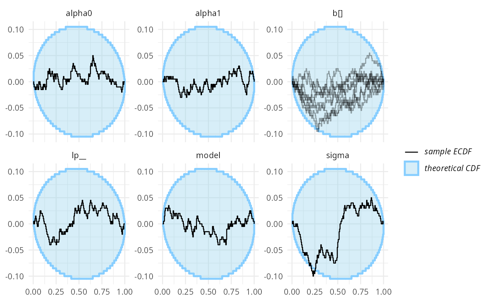
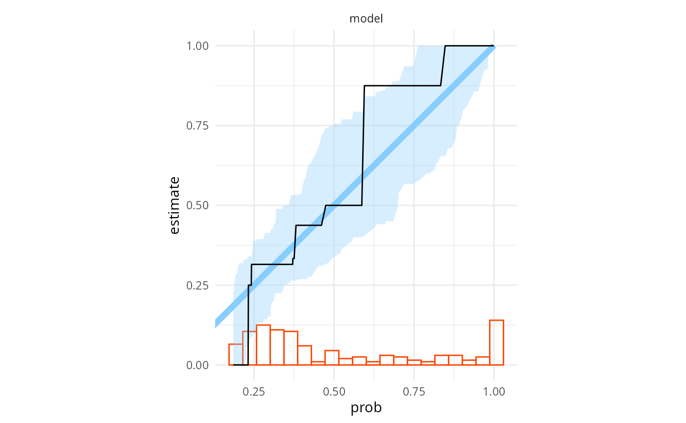

vignettes/bayes_factor.Rmd
bayes_factor.RmdSBC can be used to verify Bayes factor computation. The key is to realize, that whenever we compute a Bayes factor between two models \(\mathcal{M}_0, \mathcal{M}_1\), with the associated prior \(\pi^0_\text{prior}, \pi^1_\text{prior}\) and observational distributions \(\pi^0_\text{obs}, \pi^1_\text{obs}\), it is the same as making an inference over a larger model of the form:
\[ \begin{aligned} i &\sim \text{Bernoulli}(\text{Pr}(\mathcal{M}_1))\\ \theta_i &\sim \pi^i_\text{prior} \\ y &\sim \pi_\text{obs}^i(\theta_i) \end{aligned} \]
The same model is also implied whenever we do Bayesian model averaging (BMA). The Bayes factor is fully determined by the posterior distribution of the model index \(i\) in this larger model:
\[ \frac{\text{Pr}(\mathcal{M}_i \mid y)}{\text{Pr}(\mathcal{M}_j \mid y)} = BF_{i,j}\frac{\text{Pr}(\mathcal{M}_i)}{\text{Pr}(\mathcal{M}_j)} \]
This means, we can run SBC for this larger model! The results also naturally generalize to multiple models.
Additionally, we may also employ diagnostics specific for binary variables, like testing if the predictions are calibrated, e.g. that whenever posterior probability of model 1 is 75%, we expect the model 1 to generate the data in about 75% of the cases. We may also test the data-averaged posterior, i.e. that the average posterior model probability is equal to the prior model probability.
Let’s setup the environment (bridgesampling currently
works only with rstan, so we cannot use
cmdstanr as we do in other vignettes):
library(SBC)
library(ggplot2)
library(bridgesampling)
library(dplyr)
library(tidyr)
library(rstan)
rstan_options(auto_write = TRUE)
options(mc.cores = parallel::detectCores())
library(future)
plan(multisession)
cache_dir <- "./_bayes_factor_rstan_SBC_cache"
if(!dir.exists(cache_dir)) {
dir.create(cache_dir)
}
fit_cache_dir <- file.path(cache_dir, "fits")
if(!dir.exists(fit_cache_dir)) {
dir.create(fit_cache_dir)
}
theme_set(theme_minimal())
# Run this _in the console_ to report progress for all computations to report progress for all computations
# see https://progressr.futureverse.org/ for more options
progressr::handlers(global = TRUE)We will use a model very similar to the turtles example
from the bridgesampling package — a test of presence of a
random effect in a binomial probit model. Specifically, under \(H_1\)
\[ \begin{aligned} y_i &\sim \text{Bernoulli}(\Phi(\alpha + \beta x_{i} + \gamma_{g_i})), &i = 1,2,\ldots,N\\ \gamma_j &\sim N(0, \sigma), &j = 1,2,\ldots, G \\ \alpha &\sim N(0, \sqrt{10}),\\ \beta &\sim N(0, \sqrt{10}),\\ \sigma &\sim \text{Half}N(0, 1) \end{aligned} \]
and under \(H_0\) we assume that there is no random effect, i.e. that \(\tau = 0\).
Here is a naive implementation of the model under \(H_0\):
data {
int<lower = 1> N;
array[N] int<lower = 0, upper = 1> y;
vector[N] x;
}
parameters {
real alpha0_raw;
real alpha1_raw;
}
transformed parameters {
real alpha0 = sqrt(10) * alpha0_raw;
real alpha1 = sqrt(10) * alpha1_raw;
}
model {
// priors
target += normal_lpdf(alpha0_raw | 0, 1);
target += normal_lpdf(alpha1_raw | 0, 1);
// likelihood
for (i in 1:N) {
target += bernoulli_lpmf(y[i] | Phi(alpha0 + alpha1 * x[i]));
}
}and under H1:
data {
int<lower = 1> N;
array[N] int<lower = 0, upper = 1> y;
vector[N] x;
int<lower = 1> C;
array[N] int<lower = 1, upper = C> clutch;
}
parameters {
real alpha0_raw;
real alpha1_raw;
vector[C] b_raw;
real<lower = 0> sigma;
}
transformed parameters {
vector[C] b;
real alpha0 = sqrt(10) * alpha0_raw;
real alpha1 = sqrt(10) * alpha1_raw;
b = sigma * b_raw;
}
model {
// priors
target += normal_lpdf(sigma | 0, 1);
target += normal_lpdf(alpha0_raw | 0, 1);
target += normal_lpdf(alpha1_raw | 0, 1);
// random effects
target += normal_lpdf(b_raw | 0, 1);
// likelihood
for (i in 1:N) {
target += bernoulli_lpmf(y[i] | Phi(alpha0 + alpha1 * x[i] + b[clutch[i]]));
}
}as the name of the file suggests, the implementation is in fact wrong. We will let you guess what’s wrong and see if we can uncover this with SBC and discuss the problem later.
m_H0 <- stan_model("stan/turtles_H0.stan")
m_H1_bad <- stan_model("stan/turtles_H1_bad_normalization.stan")The simplest we can do is to actually write simulator that can
simulate the data and parameters under each hypothesis separately,
instead of directly simulating the BMA supermodel as it will let the
SBC package do some useful stuff for us.
We will also reject low variability datasets - see
vignette("rejection_sampling") for background. To gain
maximum sensitivity, our simulator also implements the log-likelihood
(lp__) as a derived test quantity, including all Jacobian
adjustments.
data("turtles", package = "bridgesampling")
sim_turtles <- function(model, N, C) {
stopifnot(N >= 3 * C)
## Rejection sampling to avoid low-variability datasets
for(i in 1:200) {
alpha0_raw <- rnorm(1)
alpha1_raw <- rnorm(1)
alpha0 <- sqrt(10) * alpha0_raw
alpha1 <- sqrt(10) * alpha1_raw
clutch <- rep(1:C, length.out = N)
x <- rnorm(N) / 3
log_lik_shared <- dnorm(alpha0_raw, log = TRUE) +
dnorm(alpha1_raw, log = TRUE)
if(model == 0) {
predictor <- alpha0 + alpha1 * x
log_lik_spec <- 0
} else {
sigma_clutch <- abs(rnorm(1))
b_clutch_raw <- rnorm(C)
b_clutch <- b_clutch_raw * sigma_clutch
predictor <- alpha0 + alpha1 * x + b_clutch[clutch]
log_lik_spec <-
log(sigma_clutch) + dnorm(sigma_clutch, log = TRUE) + log(2) +
sum(dnorm(b_clutch_raw, log = TRUE))
}
prob <- pnorm(predictor)
y <- rbinom(N, p = prob, size = 1)
if(mean(y == 0) < 0.9 && mean(y == 1) < 0.9) {
break
}
}
if(i >= 200) {
warning("Could not generate nice dataset")
}
log_lik_predictor <- sum(dbinom(y, size = 1, p = prob, log = TRUE))
variables <- list(
alpha0 = alpha0,
alpha1 = alpha1,
lp__ = log_lik_shared + log_lik_spec + log_lik_predictor
)
if(model == 1) {
variables$sigma <- sigma_clutch
variables$b <- b_clutch
}
list(
generated = list(
N = N,
y = y,
x = x,
C = C,
clutch = clutch
),
variables = variables
)
}We now generate some datasets for each model separately and then use
SBC_datasets_for_bf to build a combined dataset sampling
the true model randomly, but that also keeps track of all the shared
(and not shared) parameters:
set.seed(54223248)
N_sims <- 200
N <- 72
C <- 8
ds_turtles_m0 <- generate_datasets(SBC_generator_function(sim_turtles, model = 0, N = N, C = C), n_sims = N_sims)
ds_turtles_m1 <- generate_datasets(SBC_generator_function(sim_turtles, model = 1, N = N, C = C), n_sims = N_sims)
ds_turtles <- SBC_datasets_for_bf(ds_turtles_m0, ds_turtles_m1)Let us now build a bridgesampling backend — this will
take backends based on the individual models as arguments. The backend
in question need to implement the
SBC_fit_to_bridge_sampler() S3 method. Out of the box, this
is supported by SBC_backend_rstan_sample() and
SBC_backend_brms(). Note that we keep a pretty high number
of iterations as bridgesampling needs that (the specific
numbers are taken straight from bridgesampling
documentation).
One more trick we showcase is that we can cache individual model
fits, if we wrap a backend with SBC_backend_cached(). Since
we will reuse the same H0 model later, we will do this here just for the
H0 model. Obviously everything will also work without caching. For H1,
some datasets cause divergences, and we are lazy to fully fix that
issue, so we instead increase adapt_delta and
max_treedepth (effectively avoiding the problem by using
more compute).
iter <- 15500
warmup <- 500
init <- 0
backend_turtles_bad <- SBC_backend_bridgesampling(
SBC_backend_cached(
fit_cache_dir,
SBC_backend_rstan_sample(m_H0, iter = iter, warmup = warmup, init = init)
),
SBC_backend_rstan_sample(m_H1_bad, iter = iter, warmup = warmup, init = init,
control = list(adapt_delta = 0.99, max_treedepth = 12))
)
res_turtles_bad <- compute_SBC(ds_turtles, backend_turtles_bad,
keep_fits = FALSE,
cache_mode = "results",
cache_location = file.path(cache_dir, "turtles_bad.rds"))## Results loaded from cache file 'turtles_bad.rds'## - 6 (3%) fits gave warning. Inspect $warnings for the full messages.## - H1: 6 (3%) fits had divergences. Maximum number of divergences was 3.## Not all diagnostics are OK.
## You can learn more by inspecting $default_diagnostics, $backend_diagnostics
## and/or investigating $outputs/$messages/$warnings for detailed output from the backend.We have a small number of fits with small number of divergences, which we will ignore for now.
Lets look at the default SBC diagnostics. Note that the plot by
default combines all parameters that are present in at least a single
model. It then uses the implied BMA supermodel to get draws of the
parameters (when a parameter is not present in the model, all its draws
are assumed to be -Inf). This means that any SBC
diagnostics for model parameters combines the correctness of the model
index (and hence Bayes factor) with the correctness of the individual
model posteriors.
For clarity, we combine all the random effects in a single panel:
plot_ecdf_diff(res_turtles_bad, combine_variables = combine_array_elements)
OK, this is not great, but not completely conclusive — given the number of variables, some ECDFs being borderline outside the expected range is possible even when the model works as expected. If we had no better tools, it would make sense to run more simulations at this point. But we do have better tools.
How about binary prediction calibration? Let’s look at calibration
plot (the default type relies on
reliabilitydiag::reliabilitydiag() and especially with
smaller number of simulations, using
region.method = "resampling" is more reliable than the
default approximation for the uncertainty region). The histogram at the
bottom shows the distribution of observed posterior model
probabilities.
plot_binary_calibration(res_turtles_bad, region.method = "resampling")
That is very clearly bad (the observed calibration is the black line, while the blue area is a confidence region assuming the probabilities are calibrated, we get miscalibration in multiple regions). We may also run a formal miscalibration test — we first extract the binary probabilities and then pass them to the test:
bp_bad <- binary_probabilities_from_stats(res_turtles_bad$stats)
miscalibration_resampling_test(bp_bad$prob, bp_bad$simulated_value)##
## Bootstrapped binary miscalibration test (using 10000 samples)
##
## data: x = bp_bad$prob, y = bp_bad$simulated_value
## 95% rejection limit = 0.018184, p-value = 1e-04
## sample estimates:
## miscalibration
## 0.03427163Even more bad. A lesson here is that the formal test is often a bit more sensitive than the test implied by the calibration plot — in effect, the plot will show specific model probabilities where the predictions are miscalibrated, while the test looks at miscalibration as a global phenomenon, so it can integrate weak signals at different model probabilities. We also implement miscalibration test based on Brier score, which is typically somewhat less sensitive, but included here for completeness:
brier_resampling_test(bp_bad$prob, bp_bad$simulated_value)##
## Bootstrapped binary Brier score test (using 10000 samples)
##
## data: x = bp_bad$prob, y = bp_bad$simulated_value
## 95% rejection limit = 32.975, p-value = 0.0162
## sample estimates:
## Brier score
## 34.5696Finally, we may also look at the data-averaged posterior. If we believe we made enough simulations for the central limit theorem to kick in, the highest sensitivity is achieved by one sample t-test (we simulated with prior model probability = 0.5):
t.test(bp_bad$prob, mu = 0.5)##
## One Sample t-test
##
## data: bp_bad$prob
## t = -4.2063, df = 199, p-value = 3.925e-05
## alternative hypothesis: true mean is not equal to 0.5
## 95 percent confidence interval:
## 0.3613234 0.4498488
## sample estimates:
## mean of x
## 0.4055861Also very bad. In the cases where we are not sure the CLT holds (small number of simulations + “ugly” distribution of posterior model probabilities), we may also run the Gaffke test, which makes no assumptions about the distribution of posterior model probabilities beyond them being bounded between 0 and 1:
gaffke_test(bp_bad$prob, mu = 0.5)##
## Gaffke's test for the mean of a bounded variable (using 10000 samples)
##
## data: bp_bad$prob
## lower bound = 0, upper bound = 1, p-value = 2e-04
## alternative hypothesis: true mean is not equal to 0.5
## 95 percent confidence interval:
## 0.3612327 0.4528509
## sample estimates:
## mean
## 0.4055861the Gaffke test has somewhat lower power (since it makes fewer assumptions), but the results are also very bad.
At this point, it would be tempting to blame the
bridgesampling package, but we cannot be sure. It is
possible, that the problem is that one of the models produces incorrect
posterior.
An advantage of using SBC_datasets_for_bf to generate
the datasets, is that we can use the same simulations to also do SBC for
individual models (this and other special handling is achieved
internally via setting var_attributes()):
stats_split_bad <- split_SBC_results_for_bf(res_turtles_bad)
plot_ecdf_diff(stats_split_bad$stats_H0) + ggtitle("M0")
plot_ecdf_diff(stats_split_bad$stats_H1,
combine_variables = combine_array_elements) + ggtitle("M1") 
Those don’t look bad (though we don’t have a ton of simulation for each to be sure).
We’ll now reveal the problem (if you haven’t already noticed). For
normal posterior sampling, Stan only needs the model to implement the
density up to a constant factor. However, for
bridgesampling, we need all of those constants included to
obtain a correct estimate of the marginal likelihood. In the H1 model,
when we have target += normal_lpdf(sigma | 0, 1); we are
ignoring a factor of two as sigma has a half-normal
distribution.
In situations like this, when the Bayes factor computation is biased, data-averaged posterior tends to be the most sensitive check. However, for other problems in Bayes factor computation, like incorrect variance or more subtle issues, testing binary prediction calibration tends to be the most sensitive. Default SBC is less sensitive in the sense that it typically requires more simulations to signal a problem than binary prediction calibration checks, but more sensitive in the sense that some problems won’t manifest with data-averaged posterior or binary prediction calibration, but will (with enough simulation and good test quantities) be detected by SBC.
Tsukamura and
Okada (2024) have noted that many published Stan models do not
include proper normalization for bounded parameters and all of those
models could thus produce incorrect Bayes factors if used with
bridgesampling, so this is a computational problem one can
expect to actually see in the wild.
With the normalization constant included the correct H1 model is:
data {
int<lower = 1> N;
array[N] int<lower = 0, upper = 1> y;
vector[N] x;
int<lower = 1> C;
array[N] int<lower = 1, upper = C> clutch;
}
parameters {
real alpha0_raw;
real alpha1_raw;
vector[C] b_raw;
real<lower = 0> sigma;
}
transformed parameters {
vector[C] b;
real alpha0 = sqrt(10) * alpha0_raw;
real alpha1 = sqrt(10) * alpha1_raw;
b = sigma * b_raw;
}
model {
// priors
target += -normal_lccdf(0 | 0, 1); //norm. constant for the sigma prior
target += normal_lpdf(sigma | 0, 1);
target += normal_lpdf(alpha0_raw | 0, 1);
target += normal_lpdf(alpha1_raw | 0, 1);
// random effects
target += normal_lpdf(b_raw | 0, 1);
// likelihood
for (i in 1:N) {
target += bernoulli_lpmf(y[i] | Phi(alpha0 + alpha1 * x[i] + b[clutch[i]]));
}
}
m_H1 <- stan_model("stan/turtles_H1.stan")Now lets run SBC with the correct model:
backend_turtles <- SBC_backend_bridgesampling(
SBC_backend_cached(
fit_cache_dir,
SBC_backend_rstan_sample(m_H0, iter = iter, warmup = warmup, init = init)
),
SBC_backend_rstan_sample(m_H1, iter = iter, warmup = warmup, init = init,
control = list(adapt_delta = 0.99, max_treedepth = 12))
)
res_turtles <- compute_SBC(ds_turtles, backend_turtles,
keep_fits = FALSE,
cache_mode = "results",
cache_location = file.path(cache_dir, "turtles.rds"))## Results loaded from cache file 'turtles.rds'## - 7 (4%) fits gave warning. Inspect $warnings for the full messages.## - H1: 7 (4%) fits had divergences. Maximum number of divergences was 2.## Not all diagnostics are OK.
## You can learn more by inspecting $default_diagnostics, $backend_diagnostics
## and/or investigating $outputs/$messages/$warnings for detailed output from the backend.we got a small number of divergences, which we will ignore here
plot_ecdf_diff(res_turtles, combine_variables = combine_array_elements)
Wee see no big problems (although sigma is borderline,
we would expect this to disappear with more simulations, as we are quite
sure the model is in fact correct and bridgesampling works
for this problem)
Similarly, binary prediction calibration also looks almost good
plot_binary_calibration(res_turtles, region.method = "resampling")
Formal miscalibration test shows no problems:
bp <- binary_probabilities_from_stats(res_turtles$stats)
miscalibration_resampling_test(bp$prob, bp$simulated_value)##
## Bootstrapped binary miscalibration test (using 10000 samples)
##
## data: x = bp$prob, y = bp$simulated_value
## 95% rejection limit = 0.019416, p-value = 0.2275
## sample estimates:
## miscalibration
## 0.01579185
brier_resampling_test(bp$prob, bp$simulated_value)##
## Bootstrapped binary Brier score test (using 10000 samples)
##
## data: x = bp$prob, y = bp$simulated_value
## 95% rejection limit = 37.805, p-value = 0.8908
## sample estimates:
## Brier score
## 30.93992And that data-averaged posterior? Both with t-test and the Gaffke test we see no problems and resonably tight confidence intervals centered at the expected value of 0.5.
t.test(bp$prob, mu = 0.5)##
## One Sample t-test
##
## data: bp$prob
## t = 0.6904, df = 199, p-value = 0.4907
## alternative hypothesis: true mean is not equal to 0.5
## 95 percent confidence interval:
## 0.4742132 0.5535705
## sample estimates:
## mean of x
## 0.5138919
gaffke_test(bp$prob, mu = 0.5)##
## Gaffke's test for the mean of a bounded variable (using 10000 samples)
##
## data: bp$prob
## lower bound = 0, upper bound = 1, p-value = 0.5748
## alternative hypothesis: true mean is not equal to 0.5
## 95 percent confidence interval:
## 0.4737775 0.5557198
## sample estimates:
## mean
## 0.5138919So no problems here, up to the resolution available with 200 simulations. In practice, we would recommend running more simulations for thorough checks, but this is just an example that should compute in reasonable time.